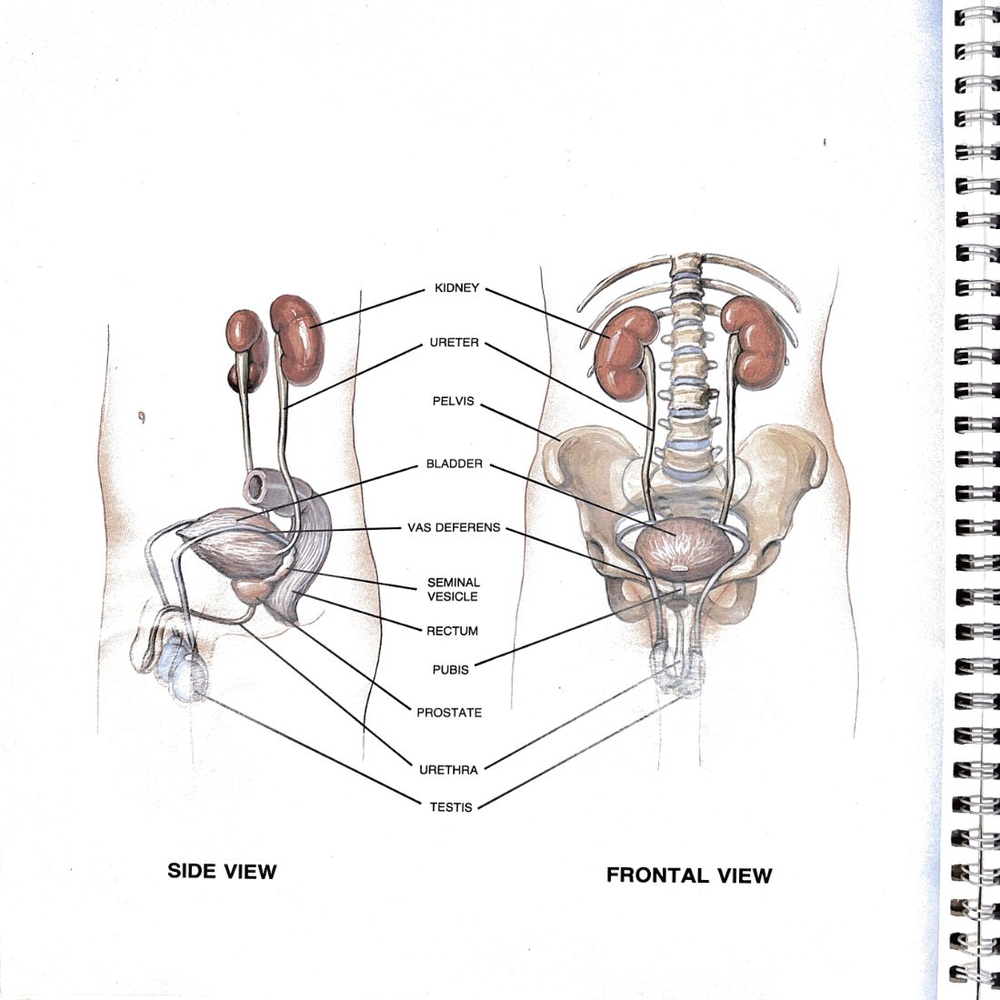
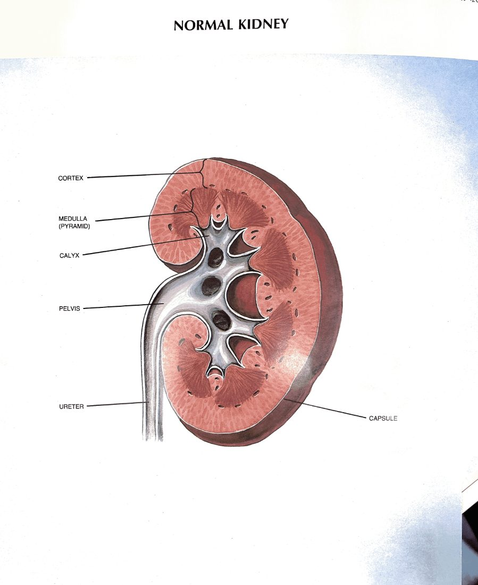
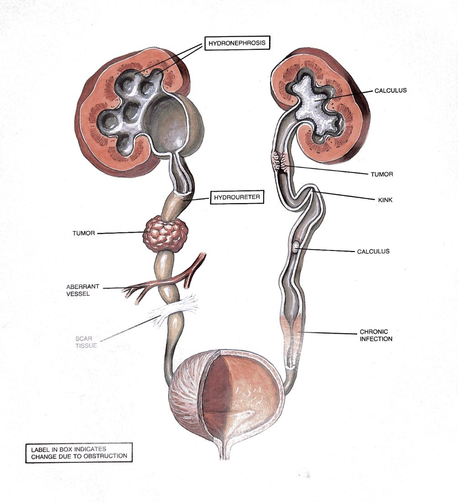
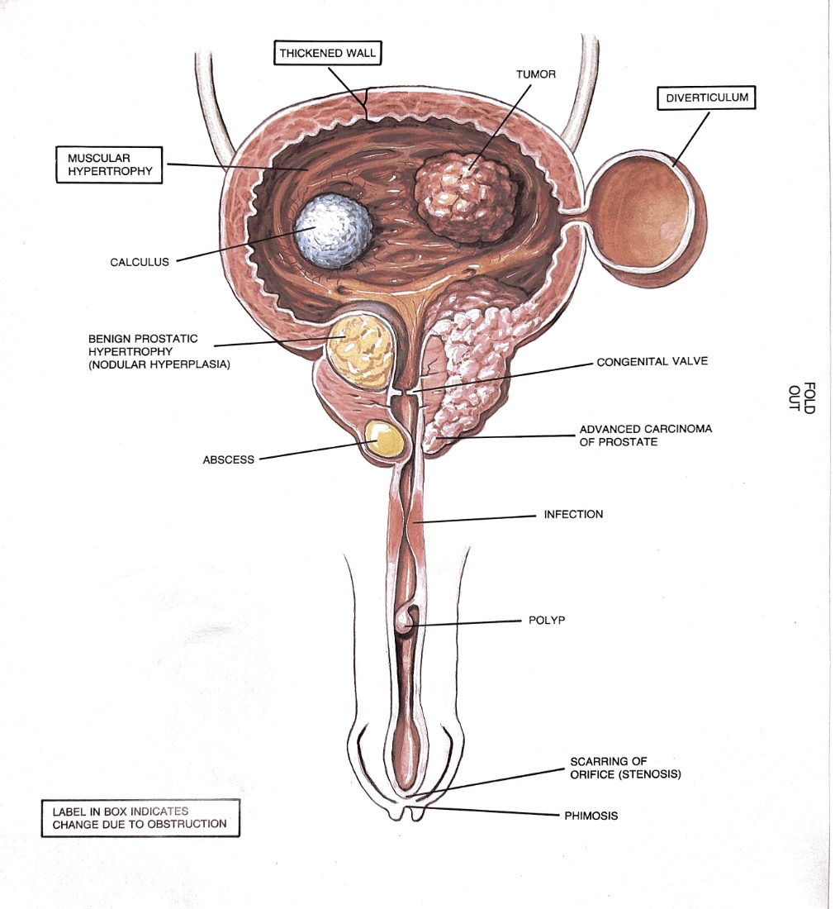
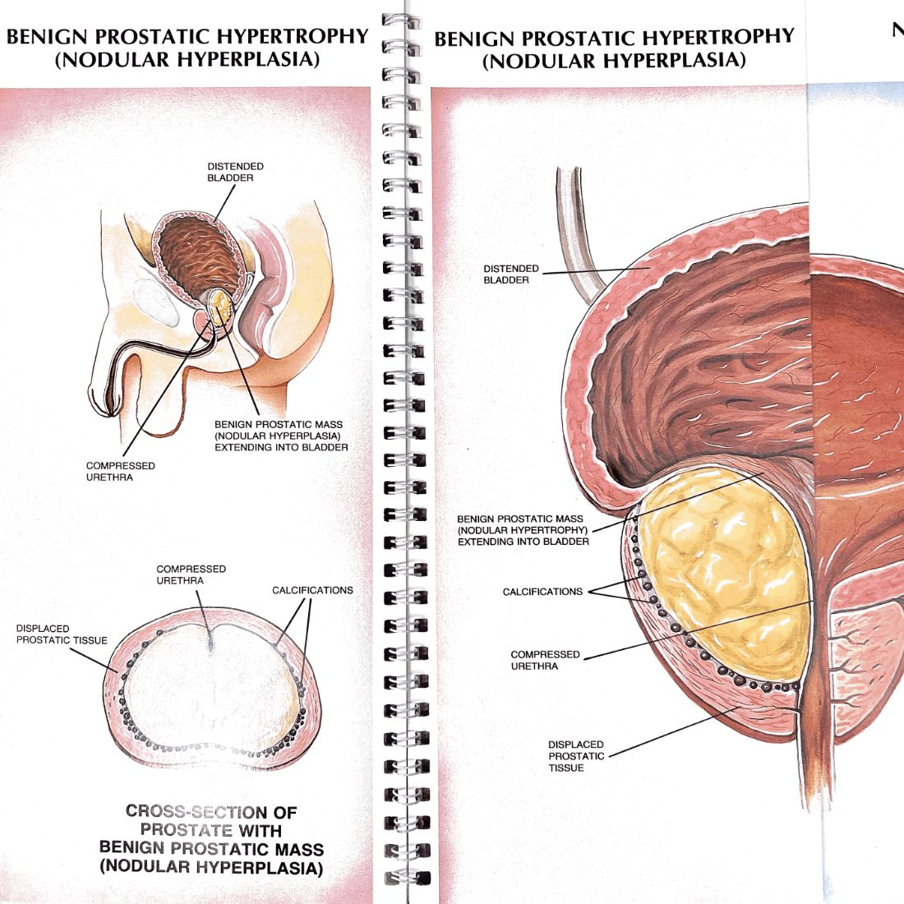

Urine is made in the kidney and leaves through the urethra, passing five stations on the way. It flows one way only. The patient feels the problem at the exit, but the cause is often further up. Your job is to find which part failed first.
The urinary tract is a conduit: a one-way tube, like a garden hose, and the second of the three geometries. So the question is different from the abdominal wall. You don't ask "how deep is the problem?" You ask "where along the tube did the flow first stop?"
Tubes go wrong in a few typical ways. Block one and pressure builds above the block while nothing comes out the end. Let bacteria in and the infection travels down with the flow and climbs back up against it. Damage the wall and urine leaks out where it shouldn't. The pattern tells you where the problem is.
Start where the flow visibly stops: that's where the patient notices it. Then work back up the tube. Everything above the block shows damage from back-pressure (a widened ureter, a swollen bladder, an injured kidney). Everything below is empty or quiet (nothing coming out, shrunken from disuse). The problem sits where the swelling ends and the quiet begins.

They are numbered in the direction urine flows: the kidney makes it, the outlet lets it out. Each part has one job and a typical way of going wrong.
For the patient, this means two people with "a kidney problem" can need completely different doctors. The kidney is the first stop of the tract, but inside it urine also flows along its own short path, from filter to drain. It's worth one close look, because problems inside the kidney behave differently from problems anywhere else in the tract.
Where the problem sits inside the kidney changes the disease completely. A problem in the glomerulus is one kind of disease (protein in the urine, nephritic syndromes). A problem in the tubules is another (the kidney can't concentrate urine, acute kidney injury). A problem in the collecting ducts, calyx or pelvis is a urology problem (stones in a calyx, a blockage where the pelvis meets the ureter at the UPJ). Same organ, three places, three different specialties.
Seen from the urinary tract, the kidney is the first stop of a tube. Inside, it is a filter made of nephrons stacked side by side (layers), fed by a branching tree of blood vessels (a network). That is why a kidney can fail in three different ways: disease of the kidney tissue (a layer problem), a blood-supply event (a network problem, e.g. a renal infarct), and a blocked drainage system (a conduit problem, e.g. a stone). Each has a different specialist, a different test and a different fix.

For the patient, this is why "I leak" and "I can't go" are different problems. The bladder (station 3) and its control gates, the sphincters and nerves (station 4), work as a team. At any moment they are either filling or emptying, never both. A centre in the brainstem, the pontine micturition centre, switches between the two.
| Phase | Bladder muscle (detrusor) | Internal sphincter | External sphincter |
|---|---|---|---|
| STORAGE sympathetic dominant (T10–L2) |
Relaxed (β3) — bladder fills at low pressure | Closed (α1) | Tonic contraction (pudendal) |
| VOIDING parasympathetic dominant (S2–S4) |
Contracts (M3) | Opens reflexively | Voluntary relaxation |
Three things have to be true for voiding to work: the bladder muscle has to squeeze hard enough, both sphincters have to open, and the kidneys and ureters have to have delivered urine to empty. If the timing is lost, and the bladder squeezes against a closed sphincter (dyssynergia), you get high pressure and no flow. To the kidneys, that pressure is the same as a blocked bladder outlet, and it damages the ureters and kidneys in the same way.
Most bladder and outlet symptoms come from one of three problems: storing (urgency, frequency, leaking: the bladder), emptying (hesitancy, weak stream, retention: the control gates or the outlet), or timing (dribbling after voiding, high-pressure low-flow: the control gates and nerves). Pick the group first. The list of possible causes shrinks straight away.
Four kinds of problem explain almost everything. For each one: where the problem actually is, where the patient notices it, and what the back-pressure above it looks like.
| Kind of problem | Where the problem is | Where the patient notices it | What you see above it |
|---|---|---|---|
| Blockage stone, BPH, stricture, tumor, clot |
Wherever the tube narrows (most often the ureter or the outlet) | Nothing or little comes out (weak stream, no urine), or pain where the tube is swollen above the block | Swelling above the block: a swollen kidney (hydronephrosis) if the ureter is blocked, a swollen bladder if the outlet is |
| Infection cystitis, pyelonephritis, prostatitis |
Wherever bacteria settle (kidney, bladder, or outlet) | Painful urination (dysuria) at the outlet; whole-body signs if the kidney is involved | Vital signs change with how far up the infection is. Bladder infection (cystitis): no fever. Kidney infection (pyelonephritis): fever, unwell. Same family of bacteria, two places, two diseases. |
| Nerve problems (neurogenic) spinal cord injury (SCI), MS, diabetes, stroke |
Outside the tract: brain, spinal cord, or peripheral nerve | The bladder and its control gates misbehave, though they are healthy themselves | Imaging the bladder or sphincter shows nothing. The problem is in the wiring, not the tube. |
| Cancer renal cell carcinoma (RCC), urothelial cancer, prostate cancer |
Any part; depends on the tissue | Blood in the urine, or found by chance with no symptoms | Often nothing above it until the tumor blocks the tube. Painless visible blood in the urine is cancer until proven otherwise, precisely because there is no back-pressure to warn you. |
"Burning when I pee" is felt at the outlet (station 5). The reflex is to treat it as a bladder infection (cystitis). But the same symptom comes from urethritis (the urethra), prostatitis (the prostate, next to the urethra), a low stone stuck at the UVJ (where the ureter meets the bladder), or atrophic vaginitis next door. The urinalysis (UA) isn't there to confirm a UTI; it tells you where to look. A clean UA in a "UTI" means the bladder is probably not the problem, and you need to look elsewhere.
These are the two most useful pictures on this page. Each shows the urinary tract with every possible problem drawn in at once. Study them until you can look at a presentation and say which part is at fault. That's what you'll be asked to do on call.


For the patient, this means fewer and better-chosen tests. Each test shows a different part of the tract. Don't choose a test from the symptom; choose it from the part you still can't see. Know what each test shows, and just as important, what it misses.
| Test | What part it shows | What it answers | What it misses |
|---|---|---|---|
| Urinalysis | The urine itself, not the tract | Is there blood, infection, protein, glucose, crystals? | Can't tell you where. Blood on a UA could come from any part. |
| Urine culture | The urine, with the organism named | What organism, and what antibiotics work on it? | Doesn't tell you which part is infected. |
| Post-void residual | How well the bladder empties | Does the bladder empty? | Doesn't tell you why it didn't empty: blockage or a weak bladder muscle. |
| Uroflow + urodynamics | Bladder, control gates and outlet: how they work | Storage pressure, voiding pressure, flow rate, sphincter coordination | No anatomy. A flat flow curve says something is blocked, not where. |
| Cystoscopy | Bladder, control gates and outlet: a camera looks inside | What does the inside of the tube actually look like? Stones, tumors, strictures, prostate pushing in. | Only what's inside the tube. A 4 cm kidney mass is invisible. |
| Ultrasound (renal + bladder) | Kidney and bladder: their structure | Hydronephrosis, bladder volume, stones, masses | Bowel gas hides the ureter. Depends on the operator's skill. |
| CT urogram | Kidney, ureter and bladder: full structure of the upper tract | Stones, masses, hydronephrosis, anatomy | How well it works. A widened system could be blocked now or scarred from years ago. |
| MRI pelvis | Bladder, control gates and outlet: soft tissue detail | Prostate cancer staging, pelvic floor anatomy | Stones (not bright on MRI). Acute infection. |
| Biopsy | A tissue sample from where the problem is | What is this growth under the microscope? | Sampling error. A negative biopsy rules out cancer in the cores you took, nothing more. |
Tests get more invasive the further inside they look. A UA is cheap and only reads the urine. Cystoscopy looks directly inside and is invasive. A biopsy takes tissue and can't be undone. Move to a deeper test only when a simpler one hasn't told you where the problem is.
When a senior asks "what's the next test?" they are really asking "which part can't you see yet?" Answer that and the test picks itself.
This is what separates thinking about the whole tube from just treating symptoms. The temptation is to treat where the patient is uncomfortable: at the exit. The right move is to treat where the flow first stopped.
An enlarged prostate squeezes the urethra that runs through it (the outlet, station 5). The patient comes in with retention: the bladder can't empty, and the complaint is at the exit ("I can't go"). The bladder isn't the cause. It has been pushing against an outlet that won't open. Pressure builds back up through the ureters to the kidneys, and the kidneys pay the price.
A catheter fixes the exit: urine comes out. But the prostate is still there. Take the catheter out and the retention comes back. The problem is at the outlet. The treatments all act there:
A catheter treats the symptom. Each of the above treats the cause. Both are sometimes right, but you should always know which one you are doing and why.
| Presentation | Where the patient feels it | Where the problem is | Where you treat |
|---|---|---|---|
| Renal colic | Flank → groin (referred along the nerve's skin area, the dermatome) | A stone in the ureter | The ureter: let it pass, lithotripsy, ureteroscopy, stent |
| Painless gross hematuria | Color of urine | Anywhere from kidney to outlet | Wherever the problem is found; never the exit unless it's there |
| Urgency / frequency | "I have to go" | Overactive bladder muscle or oversensitive bladder nerves (the bladder) | The bladder: antimuscarinic, β3 agonist, behavioural changes, botulinum toxin (BoNT) |
| Stress incontinence | Leak with cough | Sphincter / pelvic floor (the control gates) | The control gates: pelvic floor physiotherapy (PT), sling, bulking agent |
| Recurrent UTI in a man | Dysuria | Something in the anatomy that lets bacteria settle: a stone, leftover urine, the prostate | That underlying cause. Antibiotics treat this episode; they don't fix the cause. |
"Stop the bleeding, stop the pain, drain the blockage" is emergency care. It buys time. It is not the fix. Once the patient is stable, ask every time: where did the flow first stop, and what treats it there? Then plan the lasting treatment at that spot.
A 68-year-old man comes to the emergency department (ED). His lower belly feels full, he hasn't urinated in 14 hours, and his last try produced "a few drops." Work back up the tract.

The patient pointed at the exit. The bladder scan showed the bladder was swollen. The cause was the prostate at the outlet. The back-pressure had reached the kidneys. Every part mattered, but only one needed the definitive treatment. Ask of every patient: where did the flow first stop, and what treats it there?
For the patient, this means the spot they point to is often not where the problem is. The tube is damaged in one place, but the pain is felt in the patch of skin that shares its nerve supply (the dermatome). Trust the patient's pointing finger and you'll often be wrong about location.
The pattern: the patient's finger points to the dermatome, not the organ. It's the same lesson anywhere referred pain shows up. Believe the symptom, doubt the location, and image the part you suspect.
Step 1 — Take the complaint at face value. → Patient says "burning," "blood," "can't go," "leaking." → That names the group: storing / emptying / blood / pain. Step 2 — Start with the simplest test that rules out the most. → UA + culture. Bladder scan if the problem is emptying. → A clean UA in a "UTI" changes your path. So does a 600 mL PVR. Step 3 — Let the history point to the part. → Nerve symptoms? → outside the tract · the nerves (control) → Slow stream for years? → long-standing outlet block · prostate/urethra → Painless visible blood? → assume cancer until imaged + scoped Step 4 — Examine the suspected part directly when you can. → DRE for the prostate. Look at the urethral opening (meatus). → Pelvic exam where appropriate. Step 5 — Image the part you still can't see. → Kidney or ureter? → CT urogram / renal ultrasound → How it works? → urodynamics → Inside the tube? → cystoscopy Step 6 — Take tissue only when imaging can't answer. → Biopsy is the most invasive test. Use it last, and aim it. Step 7 — Treat where the problem is. → Not where it hurts. Not at the exit. Not at the swelling above. → At the place where the flow first stopped.
May 24, 2026 · reworded October 28, 2026 — for PAs, medical students, and clinical clerks
the urinary tract is a one-way tube · work back up from the exit · treat where the flow first stopped
← back to reference